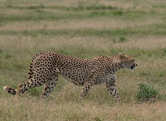
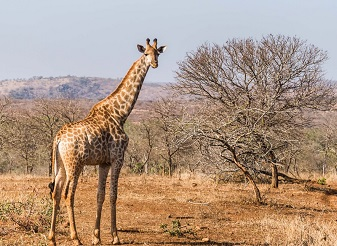
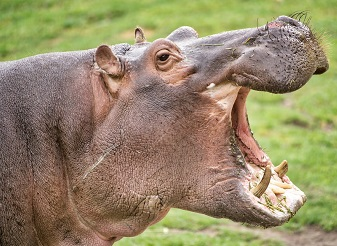
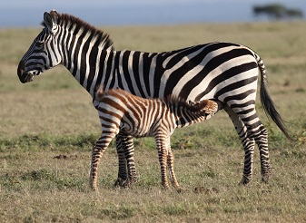

陆地速度最快，日间猎手。 The cheetah is the world's fastest land mammal, capable of running at 80 to 128 km/h, and as such has several adaptations for speed, including a light build, long thin legs and a long tail. They are mainly active during the day and hunting is the major activity, with peaks during dawn and dusk. Similar in appearance to the leopards, the Cheetah is longer and lighter in the body. It has a slightly bowed back and a much smaller and rounder face. It stands around 80cm at the shoulder, measures around 210cm in length (including the tail) and weighs anything from 40 to 60kg. It's found in small numbers in all of Kenya's major game reserves.


世界最高哺乳动物，食树叶。 Giraffe ( Giraffa) is an African artiodactyl mammal, the tallest living terrestrial animal and the largest ruminant. They are known for their graceful movements even when running at their fastest speed of 50 to 60 km per hour. The giraffe's chief distinguishing characteristics are its extremely long neck and legs, its horn-like ossicones, and its distinctive coat patterns. There are two main sub species of Giraffe found in Kenya, the Reticulated or Somali Giraffe in Northern Kenya, and the Maasai Giraffe in southern Kenya including Masai Mara. It is estimated that close to 33,000 Maasai giraffe are alive in the wild in Kenya.

水栖体型大，夜间上岸取食。 The Hippopotamus are large, round, water-loving animals that are native to Africa. They are commonly referred to as Hippo and are the third largest land mammal with the average adult males weighing in at close to 1500 kilos. Hippos typically inhabit swamps, rivers, and areas close to the lake shore, and remain cool by staying in the water during most of the day. They are found in greatest numbers in Lake Nakuru National Park and other major parks such as Masai Mara National Game Reserve, Amboseli, Nairobi and Tsavo National Parks as well as Lake Baringo.

群居草食，黑白条纹识别。 Zebras are single-hoofed animals native to Africa. They are generally social animals that live in small harems to large herds. There are three species of zebras: the plains zebra, the mountain zebra and the Grévy's zebra. Masai Mara is home to the plains Zebra while the Grevy's Zebra with their unique thinner stripes are found in Samburu Reserve, Northern Kenya. Grévy's zebra and the mountain zebra are endangered. While plains zebras are much more plentiful.